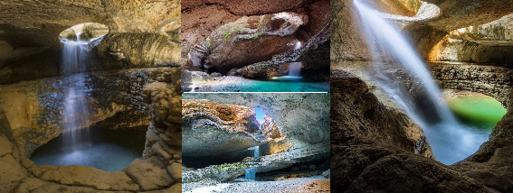
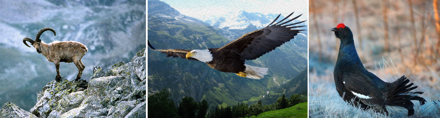
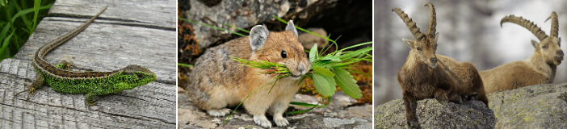
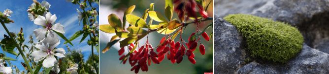

Салтинский водопад – одно из самых живописных мест в Дагестане. Это каскадный водопад с высотой падения около 15 метров, окруженный зелеными лесами и горами. Водопад является популярным туристическим направлением и привлекает тысячи посетителей каждый год.
При посещении Салтинского водопада туристам предлагается пройти пеший маршрут по лесу, насладиться красотой природы и познакомиться с местными обычаями и традициями. Вода в водопаде чистейшая и прохладная, что делает его отличным местом для освежающего купания в жаркое время года.

Про водопад
Этот падун формируется из потока Багдакули (Салтинка), который срывается с 20-метровой высоты. Раньше река служила для поселка источником жизни, но сейчас ее глубина существенно уменьшилась. Гладкие камни в ущелье свидетельствуют о том, что ранее река была гораздо глубже, чем сейчас, что лишь подчеркивает уникальность этого природного явления.
Некоторые описания водопада указывают на его подземное происхождение, но на самом деле это не так. Он находится в узком месте каньона, но не под землей.
Вход в пещеру, где образуется водопад, погружает полумрак, создавая особую атмосферу прохлады. Весной падун становится более полноводным за счет таяния снегов. Длительные дожди тоже способствуют увеличению мощности потока. В период засушливых дней он немного пересыхает, но во время полного разлива вода в гроте порой значительно поднимается. Особенно впечатляющая игра света, отражающегося от стен пещеры и воды, создает симфонию ярких цветов, меняющуюся в зависимости от погодных условий и времени суток.
Видеоролик с водопада
Историческая справка
Салтинское ущелье, ведущее к падуну, удивляет своей красотой и мощью. Глубина ущелья достигает 150 м, а когда солнечные лучи проникают в глубины Кудалинского каньона, весь ландшафт словно оживает.
Однако история этого места богата не только природными чудесами, но и событиями, оставившими свой отпечаток в памяти народа. В годы Кавказской войны, которая пронеслась сквозь эти земли, Гунибский район и Салтинский падун стали свидетелями многих битв и сражений. Одни из наиболее кровопролитных столкновений происходили в этой теснине.
Животный и растительный мир

Салтинский падун обладает уникальным биологическим разнообразием. На крутых склонах можно увидеть диких коз, грациозно бродящих по скалам. В воздухе над водопадом плавно парят орлы, своим криком нарушая тишину. Вместе с ними мелькают кавказские тетерева и куропатки.

На земле змеи, ящерицы и юркие грызуны пугливо прячутся от человеческого взгляда. Вокруг также можно встретить редких безоаровых козлов. Рыбы в реке хватает, но летом, когда она пересыхает, рыбы здесь не встретишь.

Растения теснины также разнообразны. Здесь можно встретить такие растения, как алтей и аконит, а также барбарис, будра, барвинок, василистник. Особенно заметно многочисленное присутствие морозоустойчивых растений, а именно мхов и лишайников. Растительный мир на берегу речки Салтинки, как и во всем регионе Дагестана, долгое время оставался изолированным, что способствовало формированию уникальных экосистем.
Когда добраться водопада
Есть несколько вариантов доступа к знаменитой локации:
1. Для тех, кто путешествует на собственном автомобиле, путь к Салтинскому водопаду обычно начинается с Махачкалы. Оттуда нужно двигаться в направлении города Буйнакска, который находится всего в 45 км от столицы Дагестана. Проехав Гимринский автодорожный туннель, вы окажетесь на пути к Салте.
2. Для того чтобы добраться до Салтинского водопада из Дербента на машине, вам потребуется преодолеть примерно 160 км, что займет около трех часов. Начните ваш путь на окраине деревни Салта, где расположена парковка. Оттуда следуйте указателям и спуститесь в теснины к водопаду. По пути вы заметите водопроводные трубы, которые служат ориентиром.
3. Для путешественников, предпочитающих общественный транспорт, от Северного махачкалинского автовокзала курсируют маршрутные такси до Гуниба. Маршрут занимает примерно 3 часа. По прибытии в Гуниб, можно вызвать такси до Салты, так как до поселка общественный транспорт не ездит.
4. Для тех, кто выбирает более организованный подход к путешествию, экскурсии на Салтинский водопад часто включаются в туры по Дагестану.
5. По мере приближения к водопаду вам придется преодолевать реку и двигаться по ее неширокому руслу. Река в теснине очень мелкая, поэтому даже в период половодья прогулка будет приятной и освежающей. Если вы проголодаетесь по пути, есть небольшое кафе в деревне Салта, а также несколько гостиниц.